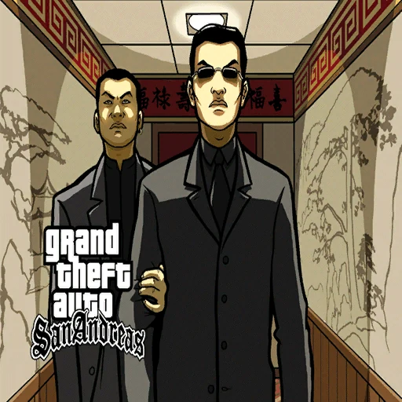

LOADING SCREEN / 01
GANTON · THE OLD NEIGHBORHOOD
Los Santos
Take the BMX back to Grove Street and pull up at the Johnson house. This is where CJ’s trip home turns into a trip across the state.
- LANDMARK
- Grove Street
- ON THE DIAL
- Radio Los Santos
LOADING SCREEN / 02
DOHERTY · THE GARAGE
San Fierro
Think steep streets, the bay, and a garage in Doherty. If you’re taking the scenic route, drive up to the Gant Bridge.
- LANDMARK
- Gant Bridge
- ON THE DIAL
- SF-UR

LOADING SCREEN / 03THE STRIP · AFTER DARK
Las Venturas
Leave the desert highway behind and roll onto the Strip after dark. The casino marquees are a good excuse to take the long way to your next save.
- LANDMARK
- The Strip
- ON THE DIAL
- Master Sounds 98.3
Original classic PC loading screens · Rockstar’s San Andreas guide